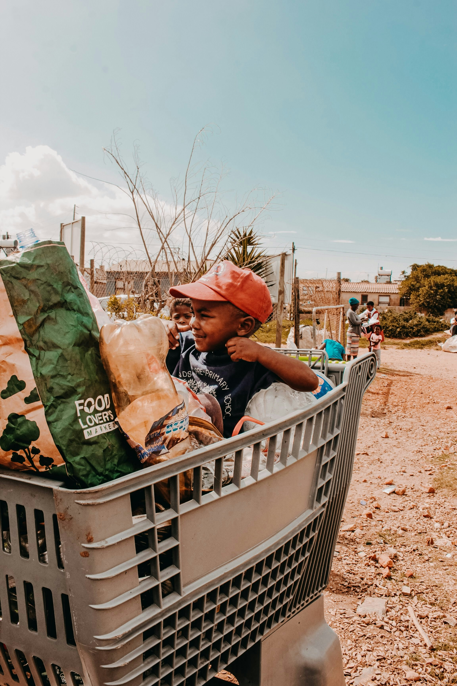
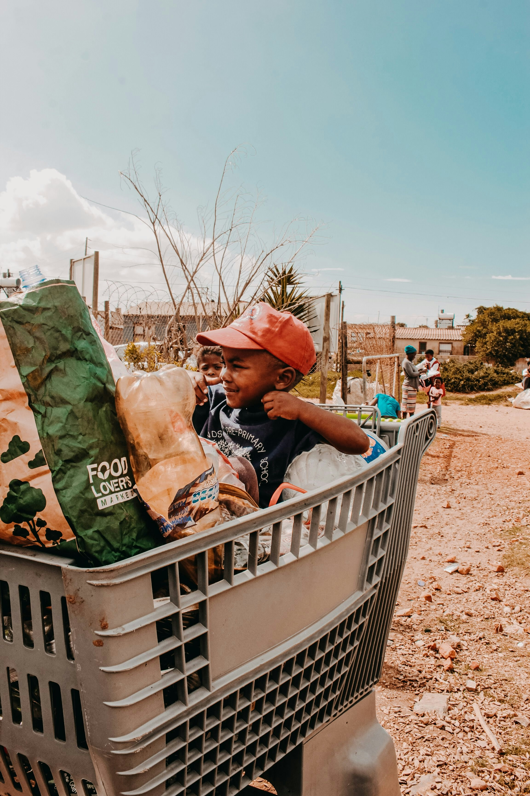
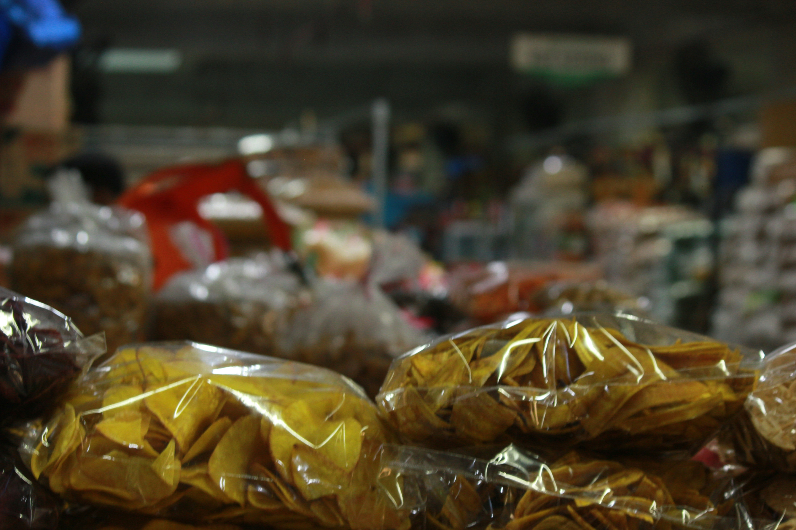
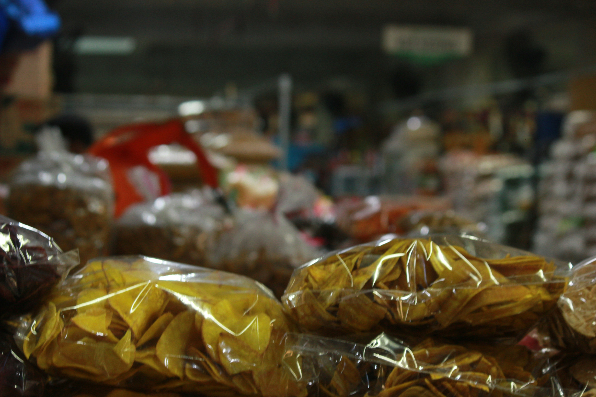

Welcome to House of Jireh,
Together it's possible.
Together it's possible.
House of Jireh is a nonprofit organization dedicated to uplifting underprivileged individuals through feeding programs, essential support, and skills development initiatives. Join us in making a difference.
To transform South Africa's future by empowering young people with educational opportunities, practical skills training, and the support they need to build successful careers and thriving communities.
 

.jpg)
 


Providing nutritious meals to underprivileged individuals daily.
Daily nutritious meals for underprivileged individuals, with special focus on children's nutritional needs.
Distributing clothing, school supplies, and other necessities.
Distribution of clothing, school bags, and other necessities to ensure children have the resources they need to succeed.
Vocational training to create employment opportunities.
Vocational training and employment-readiness programs that equip community members with marketable skills and entrepreneurial capabilities.
We collaborate with organizations and individuals to make a greater impact.


Support House of Jireh through donations, volunteering, or partnerships.Your contribution—whether financial, material, or voluntary—helps us transform lives in Refilwe. Together, we can provide hope, nourishment, and education to South Africa's most vulnerable.
Join our social-media for updates to the latest news and events.
monalisamash@gmail.com / nninimnisi@gmail.com
083 675 2858 / 079 326 3006
Refilwe, Cullinan, Gauteng